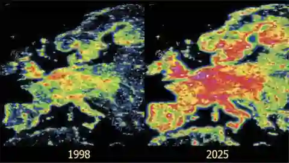

Un texte explicatif cherche à faire comprendre un phénomène : il le définit, en explique les causes ou les effets et peut proposer des solutions. Cette lettre d’information a également une visée de sensibilisation.
Observez les intertitres. Cliquez sur chaque étape pour retrouver le passage correspondant.
À retenir. Les intertitres organisent l’information. Les chiffres précisent l’ampleur du problème ; les marqueurs de cause et de conséquence expliquent les mécanismes ; les verbes à l’infinitif formulent des mesures concrètes.
L’ÉCHO LOGIQUEJUIN 2020
N° 12
La pollution lumineuse
VOTRE AGGLOMÉRATION VOUS INFORMEMARNE et GONDOIRECommunauté d’agglomération
Le développement des sociétés humaines s’est traduit ces dernières décennies par une urbanisation massive, accompagnée d’une démultiplication des éclairages artificiels nocturnes. Cela génère une pollution lumineuse qui a pris de l’ampleur ces dernières années et dont les conséquences sont nombreuses : non seulement sur la faune et la flore, mais aussi sur les ressources énergétiques ou encore sur l’astronomie ou sur la santé humaine.
Qu’est-ce que la pollution lumineuse ?
La pollution lumineuse est l’excès de lumière artificielleémise par les centres urbains. Il s’agit des lumières intérieures et extérieures des habitations et bâtiments, de la signalisation aérienne et maritime, ainsi que de l’éclairage public.
La consommation énergétique en France
Selon l’Agence de l’Environnement et de la Maîtrise de l’Énergie (ADEME), dont les résultats sont fiables, ce ne sont pas moins de 11 millions de points lumineux qui constituentle parc d’éclairage public en France dont 30 à 50 % seraientobsolètes, énergivores et peu efficaces. L’éclairage public correspond à 41 % de la consommation d’électricité des communes et émet annuellement 670 000 tonnes de CO₂. [...]
Quels impacts sur la biodiversité ?
Les lumières artificielles perturbent le sens de l’orientation et les cycles de migration de nombreuses espèces. Par exemple, pour les oiseaux diurnes, les végétaux, les amphibiens ou certains mammifères terrestres tels que les chauves-souris,
la pollution lumineuse entraîne des dérèglements des rythmes biologiques et des cycles de reproduction, un morcellement des habitats, la restriction des déplacements, un accès restreint à la nourritureet même l’apparition de maladies. [...]
Un impact sur la santé humaine ?
L’homme n’échappe pas à cette règle. Pour les êtres diurnes dont l’homme fait partie, la nuit est un moment particulièrement important carc’est le moment où le corps synthétise de la mélatonine, hormone régulatrice de « l’horloge interne », du système immunitaire et permettant la protection des cellules.
Quelles solutions ?
Adapter l’éclairage aux besoins
Préserver des zones sans éclairage quand cela est possible
Baisser l’intensité d’éclairage de certaines zones
Réaliser des extinctions temporelles
Maîtriser le flux lumineux et favoriser l’éclairage vers le sol
Source : L’Écho logique, juin 2020, n° 12, extrait reproduit dans le manuel Inspire 4, p. 46. Les chiffres correspondent au document de 2020. Les annotations et les réponses proposées sont ajoutées pour la lecture guidée.
02 · Comprendre et repérer
Activités
1 Observer le document 1
Évolution de la pollution lumineuse en Europe

Cinzano, Falchi, Elvidge. U.N. Special Environmental Symposium, Vienne (12–16 July 1999).
a. Combien d’années séparent les photos ?
Voir une proposition de réponse
27 ans (2025 − 1998).
b. Que constatez-vous ? À votre avis, que représentent les couleurs ?
Voir une proposition de réponse
Les zones colorées, notamment les zones rouges et jaunes, paraissent plus étendues en 2025. Les couleurs semblent indiquer des niveaux différents de pollution lumineuse. En l’absence de légende, cette interprétation reste une hypothèse. La source imprimée date de 1999 : le visuel 2025 doit être interprété avec prudence, probablement comme une projection, et non comme une mesure vérifiée en 2025.
c. Donnez des exemples de pollution lumineuse.
Voir une proposition de réponse
L’éclairage excessif des rues, les enseignes lumineuses, les vitrines éclairées toute la nuit ou les projecteurs orientés vers le ciel.
2 Comprendre la lettre d’information (Doc. 2)
a. Quel est l’objectif de ce document ?
Voir une proposition de réponse
Informer le public sur la pollution lumineuse, expliquer ses conséquences et sensibiliser les habitants à des mesures permettant de la réduire.
b. Qu’est-ce qui est à l’origine de la pollution lumineuse ? Depuis quand s’est-elle aggravée ?
Voir une proposition de réponse
Le développement des sociétés humaines s’est traduit par une urbanisation massive et une multiplication des éclairages artificiels nocturnes. La pollution a pris de l’ampleur ces dernières années, selon le document de 2020. Ne confondez pas cette période avec les dernières décennies, qui situent l’urbanisation.
c. Quelles sont les conséquences sur la biodiversité ?
Voir une proposition de réponse
Les lumières perturbent le sens de l’orientation et les cycles de migration ; elles dérèglent les rythmes biologiques et les cycles de reproduction, fragmentent les habitats, limitent les déplacements et l’accès à la nourriture, et peuvent entraîner l’apparition de maladies.
d. Relevez les solutions proposées.
Voir une proposition de réponse
Adapter l’éclairage aux besoins ; préserver des zones sans éclairage ; baisser l’intensité d’éclairage ; réaliser des extinctions temporelles ; maîtriser le flux lumineux et favoriser l’éclairage vers le sol.
3 Observer la langue (Doc. 2)
À deux
a. Repérez dans le texte les noms qui correspondent aux mots en gras : 1. La pollution lumineuse dérègle les rythmes biologiques. 2. La lumière morcelle l’habitat des animaux. 3. Certaines zones devraient bénéficier d’un éclairage moins intense.
Voir une proposition de réponse
dérégler → un dérèglement (dans le texte : des dérèglements) ; morceler → un morcellement ; intense → une intensité.
b. Que remarquez-vous ? Complétez la règle : On peut former un nom à partir d’un … ou d’un … .
Voir une proposition de réponse
On peut former un nom à partir d’un verbe ou d’un adjectif. C’est la nominalisation.
c. Trouvez d’autres exemples dans le texte.
Voir une proposition de réponse
Développer → développement ; urbaniser → urbanisation ; démultiplier → démultiplication ; consommer → consommation ; orienter → orientation ; migrer → migration ; reproduire → reproduction ; restreindre → restriction ; déplacer → déplacement ; apparaître → apparition ; protéger → protection ; éteindre → extinction. Les suffixes et les changements de radical ne sont pas toujours prévisibles.
d. Relevez les mots en relation avec la nature et la lumière.
a. Quel est l’impact de la pollution lumineuse sur l’homme ? Repérez la phrase dans le texte.
Voir une proposition de réponse
Le paragraphe sur la santé indique que les êtres humains sont eux aussi concernés. La nuit est essentielle à la synthèse de la mélatonine, dont le texte décrit les fonctions. Le texte ne décrit pas une maladie humaine précise.
b. Expliquez sa construction.
Voir une proposition de réponse
Pour les êtres diurnes dont l’homme fait partie (cadre) + la nuit est un moment particulièrement important (affirmation) + car (justification) + c’est le moment où le corps synthétise de la mélatonine (explication) + hormone régulatrice… et permettant… (apposition explicative). Voir l’analyse détaillée ci-dessous.
c. Repérez les pronoms « dont » dans le texte. Justifiez leurs emplois.
Voir une proposition de réponse
1. dont les conséquences : les conséquences de la pollution lumineuse ; 2. dont les résultats : les résultats de l’ADEME ; 3. dont 30 à 50 % : 30 à 50 % des points lumineux ; 4. dont l’homme fait partie : l’homme fait partie des êtres diurnes.
5 Échanger
À deux
a. Seriez-vous d’accord pour baisser ou supprimer l’éclairage nocturne ? Quelles pourraient être les difficultés ? Échangez.
Voir une proposition de réponse
Pistes : réduire la pollution et la consommation d’énergie ; protéger les espèces nocturnes ; tenir compte de la sécurité routière, des déplacements des piétons, des travailleurs de nuit et des besoins des commerces. Proposer un éclairage ciblé selon les lieux et les horaires plutôt qu’une suppression uniforme.
03 · Focalisation sur la langue
La nominalisation
Dans un texte explicatif, le nom permet de désigner un phénomène, de regrouper plusieurs informations et d’énumérer les conséquences dans des groupes nominaux parallèles.
Verbe ou adjectif
Nom
Exemple de transformation
dérégler
un dérèglement
dérégler les rythmes → un dérèglement des rythmes
morceler
un morcellement
morceler les habitats → un morcellement des habitats
intense
une intensité
un éclairage moins intense → une baisse de l’intensité de l’éclairage
restreindre
une restriction
restreindre les déplacements → la restriction des déplacements
apparaître
une apparition
des maladies apparaissent → l’apparition de maladies
éteindre
une extinction
éteindre les lampadaires → l’extinction des lampadaires
Attention : la nominalisation ne consiste pas uniquement à changer un suffixe. Il faut également reconstruire les compléments et choisir un nom qui conserve le sens de l’énoncé.
Passer de la phrase à un groupe nominal
À vous de reformuler
Les villes se développent et les éclairages se multiplient.
Voir une reformulation
Le développement des villes et la multiplication des éclairages.
À vous de reformuler
Les espèces migrent et les habitats se fragmentent.
Voir une reformulation
La migration des espèces et la fragmentation des habitats.
Le pronom relatif « dont »
Dont reprend un antécédent et remplace un groupe introduit par de. Le texte illustre trois relations syntaxiques différentes.
Dans le texte
Reconstruction
Fonction
une pollution lumineuse dont les conséquences sont nombreuses
les conséquences de la pollution lumineuse
Complément du nom
l’ADEME, dont les résultats sont fiables
les résultats de l’ADEME
Complément du nom
11 millions de points lumineux dont 30 à 50 % seraient obsolètes
30 à 50 % des points lumineux
Rapport partie / ensemble
les êtres diurnes dont l’homme fait partie
l’homme fait partie des êtres diurnes
Complément du verbe
Repérer l’antécédent → reconstruire la proposition → identifier le rôle de « de + nom ».
À vous de relier
La pollution affecte les espèces. Nous connaissons mal les conséquences de cette pollution.
Voir une reformulation
La pollution, dont nous connaissons mal les conséquences, affecte les espèces.
À vous de relier
La commune possède 500 lampadaires. 120 de ces lampadaires sont anciens.
Voir une reformulation
La commune possède 500 lampadaires, dont 120 sont anciens.
Décomposer une phrase complexe
Pour les êtres diurnes dont l’homme fait partie, la nuit est un moment particulièrement important car c’est le moment où le corps synthétise de la mélatonine, hormone régulatrice de « l’horloge interne », du système immunitaire et permettant la protection des cellules.
Cadre de l’explicationPour les êtres diurnes dont l’homme fait partie
Information principalela nuit est un moment particulièrement important
Justificationcar c’est le moment où le corps synthétise de la mélatonine
Apposition explicativehormone régulatrice de « l’horloge interne », du système immunitaire et permettant la protection des cellules.
La dernière expansion explique ce qu’est la mélatonine et ses fonctions selon le document. Elle ne constitue pas une nouvelle proposition principale. « Régulatrice » est un adjectif, « permettant » un participe présent invariable.